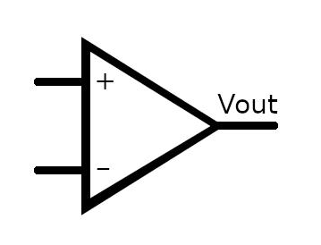
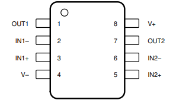
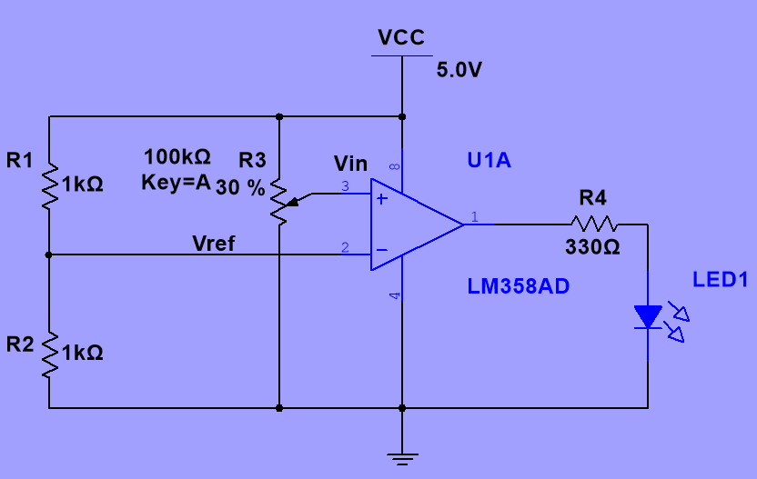
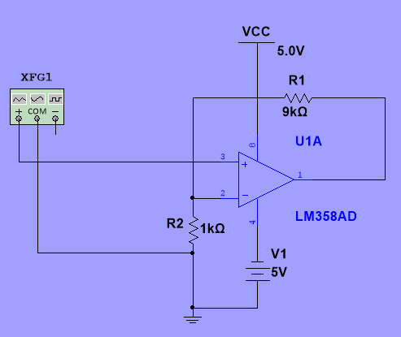
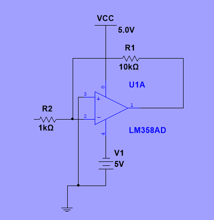

Operational Amplifiers
A prototype sensor is producing a small voltage signal.
The control system cannot use the sensor signal directly.
Your engineering team has been asked to investigate how operational amplifiers can help by:
- Making decisions from analogue signals.
- Increasing small signals to useful levels.
Given an unfamiliar op-amp amplifier circuit, you can predict what it should do, calculate its gain, simulate its operation, evaluate its performance and explain how the circuit achieves its function.
Knowledge, Skills and Behaviours (KSBs)
🧠 Knowledge
You will know:
- What an operational amplifier (op-amp) is.
- The difference between a comparator and an amplifier.
- The purpose of negative feedback.
- The difference between open-loop and closed-loop operation.
- The difference between inverting and non-inverting amplifiers.
- What voltage gain means.
- Why measured results may differ from predictions.
🛠️ Skills
You will be able to:
- Identify op-amp terminals on a schematic.
- Calculate amplifier gain.
- Predict output voltage.
- Use Multisim to simulate op-amp circuits.
- Compare theoretical and simulated results.
- Explain circuit behaviour using engineering language.
💼 Behaviours
You will demonstrate:
- Professional working practices.
- Logical engineering thinking.
- Evidence-based decision making.
- Attention to detail.
- Independence when investigating circuits.
Engineering Toolbox: Cumulative Recall (Weeks 1–3)
Question: In Week 3, how did we prove a BJT was operating in Saturation?
Question: What is the relationship between Peak ($V_{pk}$) and RMS voltage for a pure sine wave?
What Is an Operational Amplifier?
An operational amplifier, usually called an op-amp, is an electronic component that compares two input voltages and produces an output voltage.
Think of it as a very powerful electronic decision-maker.
It can be used to:
- Compare voltages
- Amplify signals
- Condition sensor outputs
- Form part of larger control systems


Part 1 – Comparator Circuits
Control-system threshold = 0.50 V
The system needs to know:
A comparator uses an op-amp to compare two voltages.
It answers a simple question: Which voltage is bigger?
The output behaves like a switch.
If: $V_{in} < V_{ref} \implies$ Output becomes LOW.
The output changes suddenly rather than gradually.
When an op-amp has no feedback path, it is operating in open-loop mode.
In simple terms:
The op-amp is making a decision rather than providing controlled amplification.
Even a very small difference between the inputs can cause the output to switch fully high or fully low.
This makes open-loop operation useful for comparator circuits.

Comparator Investigation
Change the input voltage and record what happens.
| $V_{in}$ | $V_{out}$ |
|---|---|
| 0.2 V | |
| 0.4 V | |
| 0.5 V | |
| 0.7 V | |
| 1.0 V |
Adjust $V_{in}$ to simulate sensor changes against $V_{ref} = 0.50\text{ V}$:
🔮 Pre-Power Prediction Checkpoint
What happens to $V_{out}$ when $V_{in}$ crosses above $0.50\text{ V}$?
Part 2 – Amplifier Circuits
The comparator solves one problem.
Now the requirement changes.
Required control-system input = 1.0 V
The signal is too small.
Instead of making a decision, we must increase the signal.
An amplifier increases the size of a signal.
Input = 0.1 V
Output = 1.0 V
The shape of the signal remains the same.
Only its size changes.
The sound stays the same.
Only the volume increases.
Gain tells us how much the signal has increased.
$$\text{Gain} = \frac{1.0}{0.1} = 10$$
The output is ten times larger than the input.
What Is Negative Feedback?
Negative feedback is one of the most important ideas in electronics.
A small part of the output signal is fed back to the input.
This feedback controls the amplifier.
The gain becomes extremely large and difficult to control.
The output quickly saturates.
The gain becomes predictable and stable.
The circuit behaves as designed.
When a feedback path exists between the output and input, the op-amp operates in closed-loop mode.
In simple terms:
The op-amp is now controlling itself using feedback.
This allows engineers to choose the exact gain they need.
Most practical amplifier circuits operate in closed-loop mode.
Imagine driving a car.
Without looking at the speedometer, your speed would constantly rise and fall.
The speedometer provides feedback.
You use the information to maintain a steady speed.
Negative feedback works in a similar way.
It constantly corrects the amplifier.
🔮 Pre-Power Prediction Checkpoint
What happens if we disconnect the feedback resistor $R_f$ completely?
Non-Inverting Amplifier
- The output signal increases.
- The signal does not flip upside down.
- The output stays in phase with the input.
$A_v$ = Voltage Gain
$R_f$ = Feedback resistor
$R_1$ = Input resistor
LM358
R1 = 1 kΩ
Rf = 9 kΩ
5 V supply
Calculation:
$$A_v = 1 + \frac{9000}{1000} \implies A_v = 10$$ Prediction:
Input: $V_{in} = 0.1\text{ V}$
Output: $V_{out} = 0.1 \times 10 \implies V_{out} = 1\text{ V}$

Non-Inverting Investigation: Activities 1 & 2
Complete the table.
| $V_{in}$ | Gain | Predicted $V_{out}$ |
|---|---|---|
| 0.1 V | 10 | |
| 0.2 V | 10 | |
| 0.3 V | 10 | |
| 0.4 V | 10 |
🔮 Pre-Power Prediction Checkpoint
If $R_f$ is doubled to $18\text{ k}\Omega$ while $R_1$ remains $1\text{ k}\Omega$, what is the new gain?
Build the non-inverting amplifier.
Record your results.
| Parameter | Predicted | Simulated |
|---|---|---|
| $V_{in}$ | ||
| Gain | ||
| $V_{out}$ |
Inverting Amplifier
- The signal is amplified.
- The signal is also flipped upside down.
- This is called inversion.
The negative sign tells us the output is inverted.
LM358
Rin = 1 kΩ
Rf = 10 kΩ
Calculation:
$$A_v = -10$$ Input / Output:
Input: 0.1 V
Output: -1 V

🔮 Pre-Power Prediction Checkpoint
What is the key difference between inverting and non-inverting outputs?
Comparing Amplifiers & Gain Investigation
| Feature | Non-Inverting | Inverting |
|---|---|---|
| Amplifies signal | ✓ | ✓ |
| Uses feedback | ✓ | ✓ |
| Output inverted | No | Yes |
| Gain controlled by resistors | Yes | Yes |
Change resistor values and observe the effect.
| $R_f$ | $R_1$ | Gain |
|---|---|---|
| 4.7 kΩ | 1 kΩ | 5.7 |
| 9 kΩ | 1 kΩ | 10 |
| 22 kΩ | 1 kΩ | 23 |
| 47 kΩ | 1 kΩ | 48 |
Write your observation below:
Engineering Reflection
Synthesise your theoretical predictions and Multisim simulation findings by completing the three engineering statements below:
Exit Ticket
🧠 Remember
Engineers do not simply build circuits.
They ask:
What should happen?
What actually happened?
What evidence explains the difference?
Workplace Session Complete
Your answers and simulation table records have been saved locally. Export your Multisim schematics and virtual oscilloscope waveforms to your project portfolio.